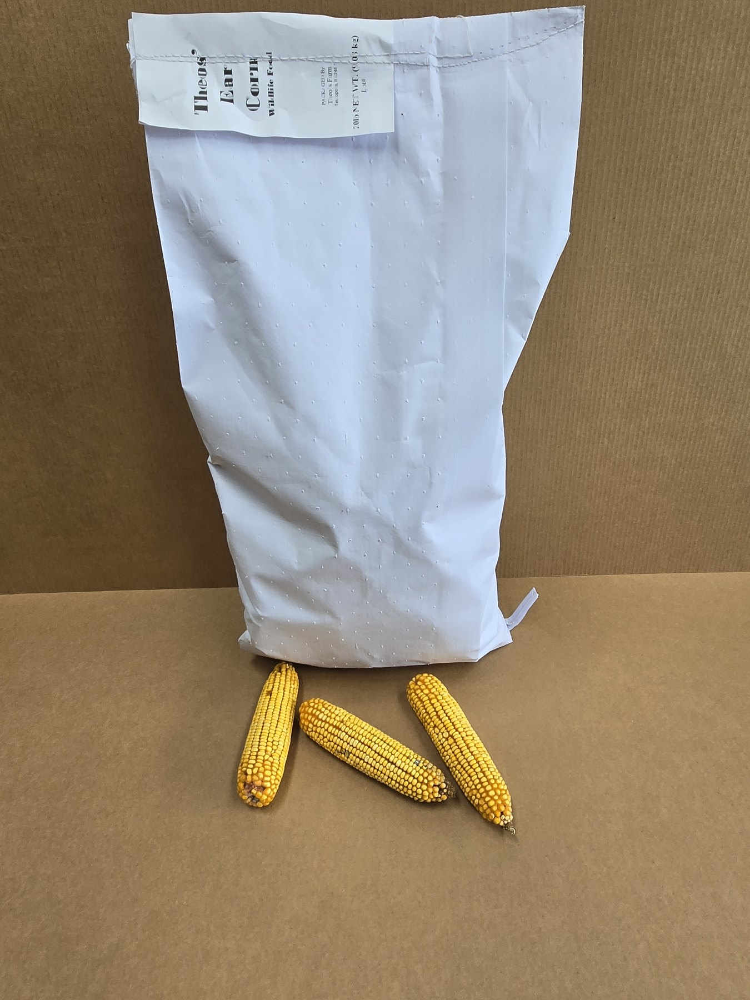

Most popularBackyard feeder bag
20 lb Ear Corn Bag
Great for squirrel feeders, small wildlife stations, and customers who want an easy-to-carry bag of freshly packaged whole ear corn.
$17.95
plus shipping